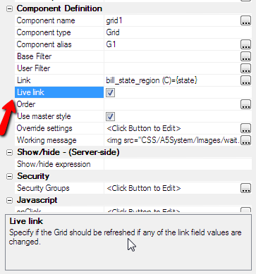

Live Linked Embedded Grids in a Dialog
Requires the Dialog Component - Live Link Embedded Grid feature pack, included in subscriptionIn Power Search for Grid using a Dialog Component we showed how you an apply a 'link' to a Grid component that is embedded into a Dialog. In this video we show how to define a 'live link'. When you use the 'live link' feature, the embedded Grid is automatically refreshed any time a linking value in the parent Dialog is changed.
This is essentially the Dialog equivalent of a Grid's linked content section.

Watch Video